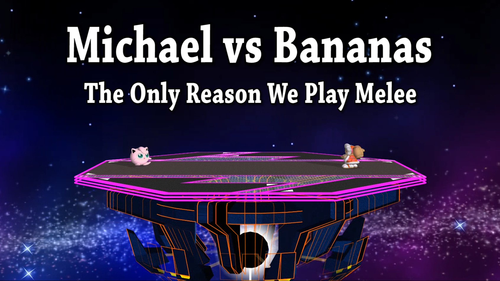
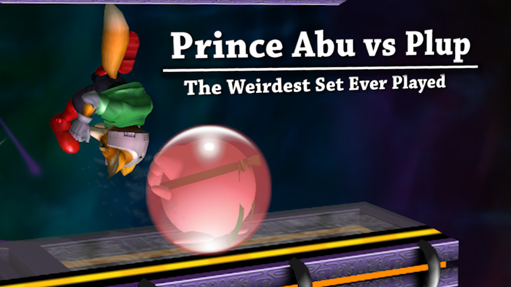
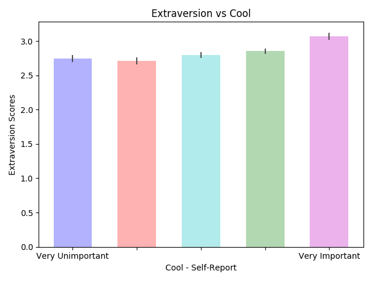

Projects
Table of Contents
- Projects
- WILT: A Multi-Turn, Memorization-Robust Inductive Logic Benchmark for LLMs
- Understanding Modern LLMs via DeepSeek
- SSBMRank
- Michael vs Bananas - The Only Reason We Play Melee
- Plup vs Prince Abu - The Weirdest Set Ever Played
- Input Latency Detection in Expert-Level Gamers
- Predicting Personality with Playstyle in Super Smash Brothers
- Humanity's Butterfly: Notes on Maimakterion
- Zen in the Art of Ping Pong The Animation
Projects
This website has a lot of random things on it, spanning from larger projects to notedumps on stuff that I'm learning about. As a result, it might be challenging to understand which of my projects might be interesting to you. Further confusing is the fact that my work is generally somewhat interdisciplinary, which means it might be difficult to identify what projects you would enjoy just based on the titles.
This page is an attempt to partially solve this: a sort of "start here" for my overall portfolio of stuff. Rather than being a list of my best projects, this page is something more like a representative sample of "good work done by Eryk". If you want to get to know me, and you ask me to show you something cool I did, these represent some good things I might show you.
WILT: A Multi-Turn, Memorization-Robust Inductive Logic Benchmark for LLMs

My professional life revolves around machine learning, particularly in spots where that could add value to video games. Large language models (LLMs) are a really promising technology for this, but are mostly evaluated in a single-turn manner. In comparison, many gaming use cases that could leverage LLMs would involve multi-turn interaction with a player, which is a component that is comparatively understudied. In this work, we introduce a benchmark based on the Wason 2-4-6 task which measures a model's ability to gather evidence and infer a hidden rule (e.g. x < y < z). Our work was fortunate enough to be accepted to the NeurIPS 2024 MATH-AI Workshop. Twitter Thread / Original Weekend Project
Understanding Modern LLMs via DeepSeek

I read a lot of papers, and sometimes I'll write literature reviews synthesizing lots of related ones. In this blogpost, I do a literature review walking through a large portion of DeepSeek's LLM papers, which details the journey from roughly Llama 2 performance to roughly Llama 3 performance. I made this as an intense survey of Large Language Modeling literature, intended to bridge the gap between "knowing transformers" to "understanding modern LLMs".
SSBMRank

Aside from academic work, I also have made some contributions in the Super Smash Bros Melee community. While I have some very modest results as a player (Most notably a lucky run to top 64 at Genesis 8), I am primarily known for my work under the broad Melee Stats umbrella, for which I am Creative Director. We've done a variety of things under this umbrella (freelance content for esports teams, video essays, and briefly sponsoring 14 different players in our free agent showcase), our most prominent project is SSBMRank, the yearly top 100 rankings for the SSBM professional scene. This is primarily GimmeDatWheat's brainchild, but I work as the data lead, where I crunch all the numbers and gather important data from tournaments.
Michael vs Bananas - The Only Reason We Play Melee

You will occasionally see my name in longform video content. This work is probably my favorite: it's a video about rules. It covers a famous set where two professional players didn't move at all, surrounded by a huge crowd of screaming fans trying to make sense of what was happening. I like when these sorts of videos have something to say rather than just describing what happened, so there's a lot of commentary in this video on top of just recounting events.
Plup vs Prince Abu - The Weirdest Set Ever Played

Our most highly-viewed video is the first one our team put out: a video about an obscure set that doesn't make any sense. This video currently has over 400,000 views on YouTube at the time of writing, and kickstarted our channel, which now has over 25,000 subscribers.
Input Latency Detection in Expert-Level Gamers

As an academic and a melee player, I often get nerdsniped by questions raised by community members. My cognitive science senior thesis at Yale University was a visuomotor perception experiment in which I exposed tournament-level SSBM players (including some top-100 world-ranked players) to precisely timed flashes of light using an arduino microcontroller in order to test their ability to blindly determine the presence of input lag compared to a control group. SSBM tournament matches are all held on CRT Televisions, since even the fastest LCD monitors necessarily add delay in between your input and the picture being displayed, effectively slowing down your reaction time. This has led to certain players to claim they could notice input lag, even at single-digit-millisecond levels. This experiment found a large and significant difference in perceptual ability between tournament-level gamers and a control group, and suggested the existence of such a perceptual effect to be somewhat plausible. A slightly abridged version with additional commentary can be found here.
Predicting Personality with Playstyle in Super Smash Brothers

Another such question is the very common hypothesis that playstyle in Super Smash Brothers correlates in some meaningful way with personality, I conducted an informal survey which administered a Big Five Personality test alongside questions about in-game variables like playstyle or character. After 1754 participants (!) completed the survey, I found a modest but significant relationship between some factors and playstyle question responses.
Humanity's Butterfly: Notes on Maimakterion

I will occasionally write essays about anime and manga, as well, when things I read intersect with media that I'm interested in. In this essay, I analyze a short-lived antagonist in Lucifer and the Biscuit Hammer. He is a speaking, shapeshifting golem who learns to speak and manipulate humans by reading lots of books. I compare this to modern-day large language models, and point out ways in which this character differs from traditional kabbalist golem iconography.
Zen in the Art of Ping Pong The Animation

Another anime-related essay is this one, where I analyze Zen themes in the storylines of cult classic sports anime Ping Pong The Animation. I often see this show beloved by people who enjoy competing at tournaments, but some light familiarity with East Asian philosophy can improve the viewing experience substantially.
Many other projects and writings of mine are scattered around this website, since I use this space as a sort of journal / garage / desk-with-papers-scattered-all-over it. You can find more about me over at the About page, you can find my Resume Here, and you can keep up with what I'm up to over at the Links page.
And, as always, more to come soon!